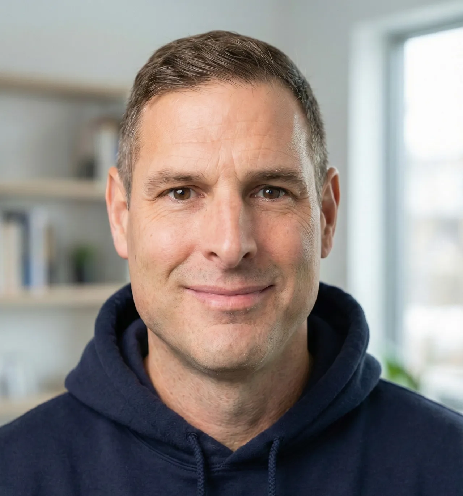
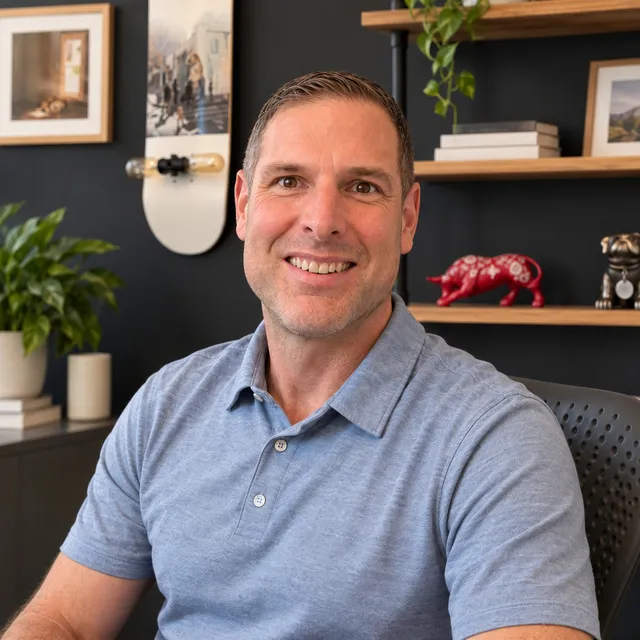

About Ken.
Ken Ashe is a builder, entrepreneur, CPA and PMP who documents what he builds, tests, and learns at KenAshe.ai. Much of his current work explores AI, automation, crypto, and emerging technology. He combines existing models, APIs, coding tools, and automation platforms to build agents, websites, and workflows. He is also the founder of Lucky Domains and is based in New Jersey.


The numbers.
I started my career in accounting and finance.
I earned my CPA and worked in financial reporting. It's still the base of how I work: proof, controls, and strict financial discipline. I'm a licensed Certified Public Accountant in the State of New Jersey, and a Chartered Global Management Accountant through the AICPA.
I'm also an Army National Guard veteran.
Running the work.
From financial reporting, I moved into project, product, and program leadership.
Over roughly two decades, my career included roles at:
- S&P Global
- EY
- Noom
- Prudential Financial
At Prudential I ultimately served as Director of Project and Product Management. I also hold the PMP and PMI-ACP from the Project Management Institute.
The side business.
Alongside that work, I built digital businesses, including Lucky Domains, which I still run.
Lucky Domains is a digital presence studio for the AI era, offering website design and development, SEO, AI visibility, digital identity, and domain acquisition and brokerage. I'm the founder. It's a separate company from the experiments I document on KenAshe.ai.
Leaving.
Then I left corporate work to focus on entrepreneurship and on building practical AI applications.
Two New Jersey papers wrote about that move:
Building in public.
Now I build AI applications, evaluate what they actually do, and publish the evidence, failures included.
I combine existing models, APIs, coding tools, and automation platforms to build agents, websites, and workflows. KenAshe.ai itself was originally built end-to-end with Claude Code, reviewed by Codex, and shipped in a day, in May 2026. Since then: agents that pay each other on Ethereum, a short film, a daily automated Digest, and a logbook of 20 builds.
On the technical side, I've spent about 20 years working with HTML, CSS, websites and WordPress, and more recently AI-assisted development. I'm not going to pretend that's two decades of software engineering.
Chapters 1–5: about.bio, about.background, about.veteran, about.technicalBackground, credentials, whatIBring and builds[] (kenashe.ai row). No years are given for career roles, so none are shown.
what I believe
What I believe
Build first, test what actually happens, document the failures alongside the wins.
I work at the AI application layer, turning existing models, APIs, coding tools, and automation platforms into working systems. Build first, test what actually happens, document the failures alongside the wins, and keep evidence separate from claims.
…and keep evidence separate from claims.
Building with AI in public. No hype, no doom. Receipts only.
on paper
Credentials.
| Certified Public Accountant (CPA) | State of New Jersey | Active |
|---|---|---|
| Chartered Global Management Accountant (CGMA) | AICPA | Active |
| Project Management Professional (PMP) | Project Management Institute | Active |
|---|---|---|
| PMI Agile Certified Practitioner (PMI-ACP) | Project Management Institute | Active |
| Forbes Business Council | Member (2026–Present) | Member |
|---|
on stage
Speaking & judging.
- 2026
TechRound100Judge
Selected as a judge for TechRound100 2026, evaluating startups and emerging businesses based on product viability, market opportunity, competitive advantages, and execution.
Official judging announcementTechRound interview - 2025
NFT.NYCSpeaker / Panelist
Participated in a panel discussing the future of digital identity.
NFT.NYC 2025 schedule - 2024
NFT.NYCSpeaker
Presented an overview of NFT domain providers and their capabilities.
NFT.NYC 2024 approved speakers
about.credentials and about.memberships verbatim, without verify links · about.speaking with its own links
in print
Press.
Profiles & features
- Journal of Accountancy
Find a mentor, land a new jobpinned
A career feature profiling Ken Ashe's move from financial reporting into project management at Prudential.
- TechRound
A Chat With Ken Ashe, Founder Of Lucky Domains And Expert Judge In The TechRound100 2026
Domain names, digital identity, AI-powered search, and the future of entrepreneurship.
- NJBIZ
Berkeley Heights Founder Left Noom After Lucky Domains Passed His Income Test
Ashe’s move from Noom to full-time entrepreneurship.
- MyCentralJersey
Fanwood resident left a job he loved. The second act is a few minutes away.
Ashe’s transition from a 25-year corporate career to full-time entrepreneurship.
- OCNJ Daily
What New Jersey Small Businesses Get Wrong About Starting With AI
Start with a repetitive task, verify results, retain human judgment.
- London Loves Business
What building AI applications in public can teach other builders
Documented builds, the AI Digest, and multi-agent experiments as examples.
- Explore New Jersey
New Jersey Operator Ken Ashe Launches KenAshe.ai, a Public Build Log for Real AI Projects
KenAshe.ai, applied AI work, background, and Lucky Domains.
Commentary & expert quotes
- TechRound
Do Domain Names Still Matter In An Age Of AI-First Internet?
- U.S. News & World Report (syndicated)
7 Smart Ways to Spend a $1,000 Tax Refund
- Smartsheet
How Can a PMP Study Plan Help You Pass the Exam?
- CertWise
5 Project Management Fundamentals Learned the Hard Way (So You Don't Have To)
Available for comment on
- AI agents, workflow automation, and practical AI applications
- AI adoption for operators and small businesses
- Bitcoin, digital identity, domains, and internet ownership
- Entrepreneurship, career reinvention, and leaving corporate work
- Project, product, and program leadership
- AI in finance, accounting, and financial services
Media kit & newsroom
The newsroom and media kit live on kenashe.ai.
press.profiles and press.commentary verbatim · about.availableForComment · Forbes Business Council listed as membership only, never as “featured”.
work with me
Sponsor an honest test or build.
A real tool. A real task. An honest account of what happened.
I build agents, automations, and AI-assisted websites. If your product fits that work, we can agree on a practical experiment and document the results, including the limits.
- One agreed task, workflow, or build that puts the product to use.
- A hands-on test and one original article on this site, with evidence of what worked and what did not.
- One factual-review round before publication. Conclusions stay independent.
- Clear sponsorship disclosure near the beginning of the article.
What money doesn't buy
Payment covers the agreed work, not a positive review. I do not guarantee views, sales, search rankings, or links that pass ranking credit. Paid links are marked as sponsored.
This is not a placement in the automated Digest. No public prices.
how to reach me